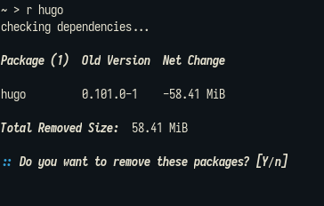

I Won, Hugo But at What Cost?
Finally, I did it. I manged to migrate from go devs' robe (جلباب).. no more hugo no more shitty mices.
I might have lost some posts, will many posts. And time. but I'm really glad I did it. I replaced 58.41 MiB binary with just a simple emacs lisp one file code.
;;; packages ;;;; Initialize the package system (require 'package) (setq package-user-dir (expand-file-name "./.packages")) (setq package-archives '(("melpa" . "https://melpa.org/packages/") ("elpa" . "https://elpa.gnu.org/packages/"))) (package-initialize) (unless package-archive-contents (package-refresh-contents)) ;;;; Install dependencies (package-install 'htmlize) ;; Load publishing system (require 'ox-publish) ;;; Sitemap preprocessing ;;;; Get Preview ;; modify with an "if error skip" logic ;; still need conditional (defun my/get-preview (file) "get preview text from a file Uses the function here as a starting point: https://ogbe.net/blog/blogging_with_org.html" (with-temp-buffer (insert-file-contents file) (goto-char (point-min)) (when (re-search-forward "^#\\+BEGIN_PREVIEW$" nil 1) (goto-char (point-min)) (let ((beg (+ 1 (re-search-forward "^#\\+BEGIN_PREVIEW$" nil 1))) (end (progn (re-search-forward "^#\\+END_PREVIEW$" nil 1) (match-beginning 0)))) (buffer-substring beg end))))) ;;;; Format sitemap entries (defun my/sitemap-entry (entry style project) "sitemap entry formatter See code here for foundation: https://loomcom.com/blog/0110_emacs_blogging_for_fun_and_profit.html" (print entry) (when (not (directory-name-p entry)) ; when not a directory (format (string-join '("*[[file:%s][%s]]\n" "#+BEGIN_published\n\n" "%s\n" "#END_published\n\n" "%s\n" "----------\n")) entry (org-publish-find-title entry project) (format-time-string "%A, %B %_d %Y at %l:%M %p %Z" (org-publish-find-date entry project)) (let ((preview (my/get-preview (concat "content/" entry)))) (insert preview)) ))) ;;;; Format Sitemap ;; modify this one! (if necessary) (defun my/org-publish-org-sitemap (title list) "Sitemap generation function." (concat "#+OPTIONS: toc:nil") (org-list-to-subtree list)) ;; modify this one! (defun my/org-publish-org-sitemap-format (entry style project) "Custom sitemap entry formatting: add date" (cond ((not (directory-name-p entry)) (let ((preview (if (my/get-preview (concat "content/" entry)) (my/get-preview (concat "content/" entry)) "(No preview)"))) (format "[[file:%s][(%s) %s]]\n%s" entry (format-time-string "%Y-%m-%d" (org-publish-find-date entry project)) (org-publish-find-title entry project) preview))) ((eq style 'tree) ;; Return only last subdir. ;; ends up as a headline at higher level than the posts ;; it contains (file-name-nondirectory (directory-file-name entry))) (t entry))) (defun file-contents (file) (with-temp-buffer (insert-file-contents file) (buffer-string))) ;;; define publishing project (setq org-publish-project-alist (list (list "org-site:main" :recursive t :base-directory "./content" :publishing-directory "./public" :publishing-function 'org-html-publish-to-html :html-preamble (file-contents "assets/html_preamble.html") :with-author nil :with-creator t :with-toc t :section-numbers nil :time-stamp-file nil :auto-sitemap t :sitemap-title nil;"Daniel Liden's Blog" :sitemap-format-entry 'my/org-publish-org-sitemap-format :sitemap-function 'my/org-publish-org-sitemap :sitemap-sort-files 'anti-chronologically :sitemap-filename "sitemap.org" :sitemap-style 'tree) (list "org-site:static" :base-directory "./content/" :base-extension "css\\|js\\|png\\|jpg\\|gif\\|pdf\\|mp3\\|ogg\\|swf" :publishing-directory "./public" :recursive t :publishing-function 'org-publish-attachment ) (list "org-site:assets" :base-directory "./assets/" :base-extension "css\\|js\\|png\\|jpg\\|gif\\|pdf\\|mp3\\|ogg\\|swf" :publishing-directory "./public/" :recursive t :publishing-function 'org-publish-attachment))) ;;; additional settings (setq org-html-validation-link nil org-html-htmlize-output-type 'inline-css org-html-style-default (file-contents "assets/head.html") org-export-use-babel nil) ;;; generate site output (org-publish-all t) (message "Build Complete!")

Now I feel like I can do anything. I can link directly my org-files without caring about any linking issues, also I like the new minimal look, a lot.